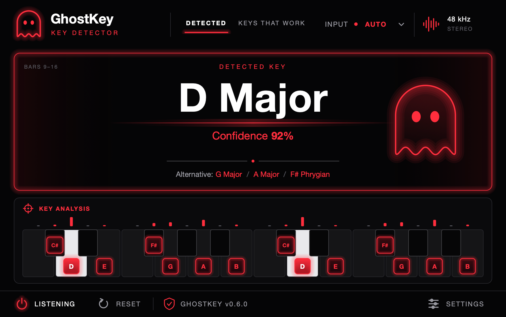
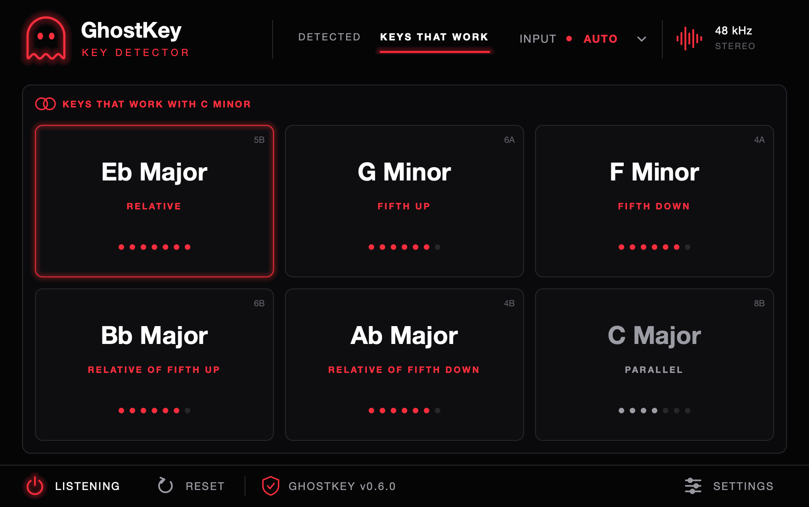
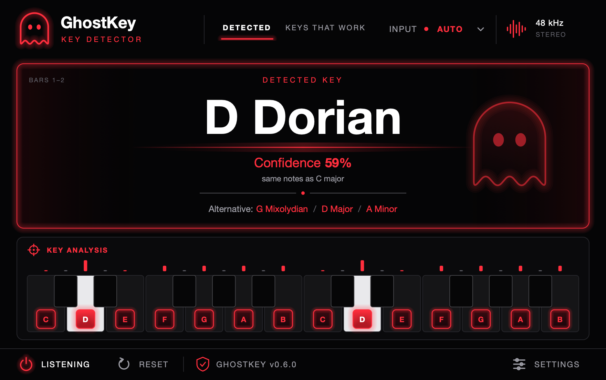

Know the key.
Then pick what fits.
GhostKey listens to your track and tells you its key, its scale, and the keys that work with it. Drop it on a track, press play, read the answer.

Three steps, a couple of seconds.
No file to export and nothing to upload. GhostKey works inside your DAW on whatever is playing.
Put it on a track
Any track, or the master to hear the whole mix. Your audio passes through untouched.
Press play
Loop the section you care about. It reads audio, or MIDI notes where your DAW sends them.
Read the key
The key, how confident it is, and the scale lit up on a keyboard. The result is saved with your project.
What can I layer over this?
One tab lists the six closest keys to the one it found, starting with the one that shares every note.
- Dots show shared notes out of the seven in the scale, so you can see how safe each choice is.
- Camelot codes on every key, for DJs and harmonic mixing.
- Click an alternative to see the scale and matches for that key instead.


It names the scale, not just the key.
A loop that sits on D minor but uses B natural is D Dorian. GhostKey says so, and tells you which ordinary key shares its notes.
- All 24 major and minor keys.
- Harmonic and melodic minor, flagged when the notes spell them.
- Five modes: Dorian, Phrygian, Lydian, Mixolydian and Phrygian dominant.
Built for how tracks are actually made.
A few things it does that a quick guess by ear won't.
Hears notes, not noise
A voice or a synth is a note plus a stack of overtones, and those overtones land on other note names. GhostKey works out which is which, so it isn't fooled into hearing notes nobody played.
Major or its relative minor
D minor and F major use exactly the same notes. GhostKey uses the chord your loop starts on, and where the bass sits, to tell you which one is home.
Not tuned to A = 440? Fine.
Samples and older recordings are often slightly sharp or flat. GhostKey measures the tuning and reads the notes correctly anyway.
Honest about uncertainty
You get a confidence figure and the next most likely keys. The ghost glows brighter the surer it is. A single vocal on its own can be ambiguous, and it will tell you.
What you need.
| System | macOS 11 or later, on Apple Silicon or Intel |
|---|---|
| Formats | VST3 and Audio Unit |
| Works in | Ableton Live, Logic Pro, GarageBand, FL Studio, Cubase, Reaper, Studio One, Bitwig and other VST3 or Audio Unit hosts |
| Windows | Not yet. A Windows version is planned. |
| Internet | Needed once, to activate a licence. Not needed after that, or during the trial. |
Before you ask.
How does the trial work?
Install it and use everything for 14 days. After that the key display locks until you enter a licence key. Your audio keeps passing through, so an open project is never interrupted.
Does it change my sound?
No. GhostKey only listens. What goes in comes out bit for bit, with no added latency.
How long does it take to find the key?
About two seconds of audio, or three different MIDI notes, is enough for a first reading. It keeps refining as it hears more. For the best result, press Reset and play your loop from its first chord.
Can it get the key wrong?
Yes. A single part on its own, like a vocal that never lands on the key note, often fits two or three keys equally well. GhostKey shows its confidence and the alternatives so you can judge. It is most reliable on material with chords or a bass line.
Does it work with MIDI?
In hosts that route MIDI to an effect, yes, and it reads MIDI in preference to audio. In Logic Pro and GarageBand the Audio Unit works from audio.
What does the plugin send over the internet?
When you activate, it sends your licence key and your computer's name to Ghost Audio's payment provider, Lemon Squeezy, so you can tell your activations apart. Nothing is sent during the trial, and your audio never leaves your computer.
Can I move my licence to a new computer?
Yes. Open Settings in the plugin, choose Licence, and deactivate the old computer. Then activate on the new one.
Stop guessing the key.
Try it free for 14 days on your own tracks.